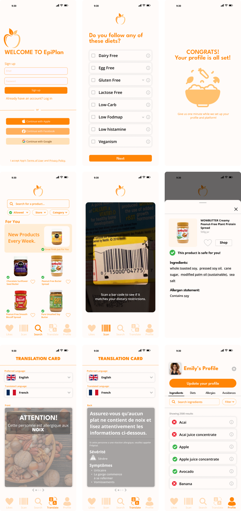

→ NEXT

EpiPlan
Product Design Sprint
PROJECT OVERVIEW
| Industry | DIETARY ASSISTANCE / PLANNING |
| Project Duration | 36 HOURS |
| Category | PRODUCT DESIGN |
| Year | 2024 |
| Creators | AUDREY LI & 1 OTHER DESIGNER |
Challenge
Over 3 million Canadians have food allergies and navigating dietary restrictions is not easy. The task was to create a digital product that helps identify safe foods and dining options, improves communication of dietary needs, and supports a healthy, social lifestyle for people with dietary restrictions.
Approach
USER RESEARCH & ANALYSIS
• Conducted in-depth research to understand the target user’s requirements, wants, and needs.
• Analyzed market trends and other competitors to identify opportunities for differentiation.
CONCEPTUALIZATION
• Brainstormed potential features and design concepts to ensure the user’s needs are met while maintaining product functionality.
• Communicated closely with users who have dietary restrictions to refine chose concepts, ensuring user experience and flow.
DESIGN DEVELOPMENT
• Created engaging and versatile screens for the various app features.
• Implemented a translation card to assist users communicate while visiting other countries or small businesses where communication is lacking.
• Designed a food scanner to make grocery shopping simpler, ensuring users are able to identify safe food products at ease.
• User profile customization allows the user to store all their dietary restrictions in a single, convenient, and accessible location.
Results
I gained valuable experience while conducting this design sprint. I was able to practice the UI/UX and Product Design process, learning the nuances and how important attention to detail is. I will take this opportunity to learn from my mistakes and adapt to create better and greater things.
